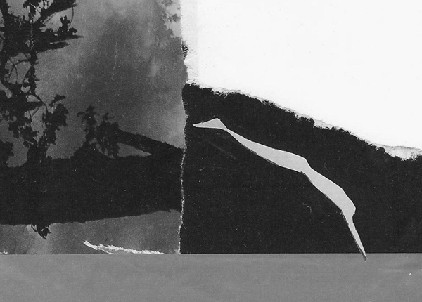

Gary LeBel
Cumming, Georgia, USA
from The Lost Wax II
1. Pilgrimage
He could never go there by motorboat he said, so we took the skiff instead. I helped each of his ninety-three years into it as he stepped frailly down from the dock. Though he weighed next to nothing, I was afraid he'd stumble, and I'd drop him. He picked his way to the seat at the bow while holding my hand firmly, his cane hooked over my wrist. After he sat down, he straightened his back with the pride of a lion, leaning his shiny cane against his lap. I smiled as he gazed out over the bow, his neck stretched high, his chin thrust up and forward.
For a long time there was only the sound of the oarlocks and rippling eddies. After about an hour's row, the little island came into view and I swear I saw a joy shimmy down his back as we drew closer.
When we neared landfall, he pointed to a small jut of land with his cane and said that we should pull the boat up there, for it was "a good and easy spot." The water was exceedingly clear and you could see perch and sunfish gliding over the sunlit algae along the bottom.
Since I had my bathing suit on, I leapt over the side near shore, pulled the boat up over a small pebbly beach and lashed it to a tree. He was looking round everywhere like a finch, and his smile was so wide it was as if he were seeing things I could not. He stepped out of the bow and onto the island with no assistance at all for I could not have helped him fast enough.
"Come," he said as he headed down what looked like a narrow path overgrown with maples, his cane doing double time with his lively caper. Blue jays were squawking invisibly here and there. The part of the island where we'd landed was merely a steppingstone to the larger, and so we crossed a narrow strip of land that bridged the two. "What's the name of this island?" I asked. "Teardrop," he said.
Then we ambled through a grove of pines; I had seen them from the water, tall and bluish. It was cool and still inside, and the pines were redolent with a sap that smelled of raw turpentine. At the end of the pine-grove we met the water's edge in a place that was dominated by a huge black stone. He leaned his cane against it then swept his trembling hands over its girth and along the smoothness of its length as if it were a living thing.
Then he stopped his "petting" suddenly and knelt down beside the stone which was hard for him to do, and wept. I recall the sound of it made my chest hurt, and maybe I wept too but I don't remember. I couldn't make myself move closer to comfort him for I was sure he didn't want to be touched, at least not then. After a while he cleared his throat.
"We swam from this rock, your great grandmother and me. We came here Sundays, all summer long. We worked so hard then, six days a week. We kept a small boat hidden behind a bush at an old rundown cottage across the way. It was over there," he said pointing across the lake. "It's all gone now. We'd drive there and park my old Ford pickup as if we owned the place. Then we'd carry our boat down to the water and row out here and swim all day long from this beautiful stone. We called it 'Ellie', short for 'elephant', and we said hello to it each time we came. The sun would warm its back, and in the afternoons we'd lie here side by side after swimming, often imagining our future. We'd bring a lunch and stay till early evening, leaving ourselves just enough light to row home by. We promised ourselves that one day we'd buy that old place and fix it up," and then he grew quiet. "Oh, she was a beauty, my first and only love; I wish you could have known her. How she would have loved you. I hope it happens to you someday, that kind of love, but not the losing, oh no, not the losing . . ."
After a silent pause he took up his cane and swept it through the air over the stone as if he were tracing the path of a swimmer running to make a dive. He started to get up with great strain and difficulty, and I rushed to help him, grabbing him gently under his arm. "Thanks, dear," he said, and he made his way to the water which was very deep where the shear end of the stone plummeted into the lake; he stood a moment staring down into the depths. Nearby there was an open view between two great pines, and he made his way toward it, asking my help to sit down. When he had at last become comfortable, he grunted and set his cane between his legs, exhaling loudly as if refreshed.
"So far you've hardly said a word, my dear. You seem to know there's a bit of magic here, don't you?" he said, and I smiled shyly, looking down, rolling bashfully on my heel. He turned his gaze away and toward the open water. "You're the only one who could have brought me here, and I think you've known it since we left: thank you. And I'll tell you something else, great granddaughter of mine, we had only one summer together but we lived every minute of it, a lifetime really; like butterflies we were, delirious, happy butterflies. I was eighteen and she a year younger, not much older than you."
I wanted to say something for it was welling up in my breast but I couldn't. I didn't have to ask him what had happened to his beloved for it was known to everyone in our family that she'd perished in the Great Influenza epidemic of 1918. The fruit of their long summer together was James, my grandfather, who'd been born just before the sickness had descended on them like a flock of Harpies.
After a spell of quiet he said, "Darlin', I'm ready if you are," and after reaching for his arm and twining it with his, I helped him to his feet. We crossed the narrow isthmus returning through the maples that were trembling with a soft and steady flutter . . . I helped him into the skiff and shoved us off. This time he sat facing me.
Was it
your eyes or Daphne's
I kissed that afternoon
for the taste of your tender leaves
is still right here on my lips
Into heaven
I'll reach for a hammer, nails
and a crosscut saw
if only to hear your footsteps climb
my pinewood steps again
If only
the immortal iris
could share
with the rest of its aging body
just one of its many secrets . . .

Image: Night Swimming (c. 2000) collage
2. The Fisherman's Daughter
Sea-waves rolled lightly down the shingle as gulls' cries pierced the pinking sky.
"Father," said she, "why do only men sail away in ships?"
"Because they are strong, and the sea is stronger."
She tilted her head much as a sparrow would, and then flexed her arm to show her might. "Look, Father! I could do it!" she said, "I could sail and return to our island on any ship," placing great emphasis and a little growl as well on "any." Her father smiled, reached up and squeezed her little bicep's bud. "Yes, no doubt, Anemone, but I shouldn't like you to go to war and see such things as I have seen."
Anemone stood on her tiptoes to make herself look taller, and puffed her chest out defiantly like a robin's breast. "Why not, Father? My eyes are strong!"
"Yes, but I hope your heart will never harden, my little sea-flower, because all of Hellas depends for its very survival on the sweetness and intelligence of girls like you."
"Ah!" she said changing direction. "Then why can't I write verses, too, like you, Father? I hear you singing them to yourself while you mend the nets, and once after you had lain with Mother. And I cried so hard when I heard you sing of Aristides one night. It was good to cry for him—I don't know why—it just is so."
"Yes, daughter, it is. I've not sung anything yet for which I'm proud but I feel it hovering round me like a dream I keep trying to catch. Come then, my little poetess; let us make some verses together while we walk home."
"Really, Father, really?" she said, tossing her long yellow locks over one shoulder while looking up at him with a devilish grin out of the corner of one eye.
"Yes! Choose your tune, girl!"
"But I don't know any, Father; well, maybe one . . . and not a good one either."
"Sing it anyway, but listen: I'll give you a hint. Count the footsteps of your words like the hoof-beats of a proud young mare, or the sea-waves on certain mornings as they wash lazily over your toes. Take your time, for all good things require it. Come, what's your first line to be? I just know you have one."
Anemone parked her hips on one leg, cocked her head and thought awhile.
"I, I . . .
would sing of isles and winds, of years that come and go like sails dyed red and blue"
and her father smiled and rushed to hug her, but without uttering a word of praise he raised his eyebrows and with an upturned palm bid her to continue.
Anemone cleared her throat. "Of . . .
. . . of goats the herder lulls with song, and of the herder, too,
who sleeps by the rippling stream that quenches all
with boundless life . . ."
"You, young lady, have been practicing, haven't you?" And Anemone shook her head first "no" then nodded "yes," giggling impishly through her fingers. Her father looked down at her admiringly while shaking his head loosely from side to side, his love for her gleaming in the large white teeth he pressed thoughtfully against his lip . . .
and the sea rose and fell that evening before them like the breathing of holy Tethys, as father and daughter made their way home singing,
and all was witnessed by me, the wife of one and the mother of the other,
so fair and clever . . .
Where I sometimes hide
in secret behind the 'leisure-stone'
my husband comes oft
of a morning to sing
when he thinks he is all alone
Antissa of Lemnos
Image: Mythos (2012) montage/assemblage
Author's Note: Someday we may find evidence that both Samuel Butler and Robert Graves were right; if so, it would turn the world upside-down, or at least the poetic part of it.
για την κόρη μου (for my daughter)
|